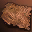
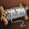
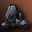
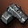
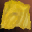

Крафт Implosion Gauntlets в Lineage 2 Interlude
Рецепт и материалы
на 1 попыткуImplosion Gauntlets — броня B-грейда в Lineage 2 Interlude. Крафтится по рецепту Recipe: Implosion Gauntlets (60%) с шансом 60%. Уровень Create Item — 7, требуется 183 MP. Рецепт расходуется при каждой попытке — как и материалы.
При провале теряются все материалы и рецепт (если он расходуемый). Каждая попытка независима: предыдущие успехи или провалы не меняют шанс следующей.
Сколько попыток и ресурсов
математика шансаБазовые ресурсы с промежуточными крафтами
| Материал | На 1 попытку | На 1 успех | На 95% |
|---|---|---|---|
 Animal Skin |
768 | 1 280 | 3 072 |
 Thread |
160 | 266,67 | 640 |
 Coal |
128 | 213,33 | 512 |
Varnish |
64 | 106,67 | 256 |
 Iron Ore |
64 | 106,67 | 256 |
Animal Bone |
40 | 66,67 | 160 |
Implosion Gauntlet Fabric |
13 | 21,67 | 52 |
 Suede |
12 | 20 | 48 |
Crystal: B-Grade |
8 | 13,33 | 32 |
Asofe |
4 | 6,67 | 16 |
Gemstone B |
4 | 6,67 | 16 |
Recipe: Implosion Gauntlets (60%) |
1 | 1,67 | 4 |
Колонка «на 95%» — сколько материалов нужно, чтобы с вероятностью 95% получить хотя бы один предмет. Расчёт предполагает независимые попытки и фиксированный шанс 60%.
Материалы на разное число попыток
без гарантии| Попыток | Материалов | Ожидаемо успехов | Шанс хотя бы одного |
|---|---|---|---|
| 1 | 66 | 0,6 | 60,00% |
| 5 | 330 | 3 | 98,98% |
| 10 | 660 | 6 | 99,99% |
| 25 | 1 650 | 15 | 100% |
| 100 | 6 600 | 60 | 100% |
Шанс не накапливается: даже после 10 провалов следующая попытка всё равно имеет 60%. Таблица показывает только вероятность получить хотя бы один предмет за серию независимых попыток.
Как крафтить Implosion Gauntlets
Create Item- Соберите 7 позиций материалов: 66 предметов на одну попытку.
- Изучите рецепт Recipe: Implosion Gauntlets (60%). Для крафта нужен уровень Create Item 7 и 183 MP.
- Используйте умение Create Item. Шанс успеха — 60%, каждая попытка независима.
- При успехе получите 1 предмет Implosion Gauntlets. При провале материалы и расходуемый рецепт пропадут.
В симуляторе можно проверить серию попыток: одиночный крафт, ×10, ×100 или режим «До успеха». Статистика сохраняется в браузере и показывает фактический процент успеха.
Другие рецепты
Броня · BЧастые вопросы
FAQКакой шанс крафта Implosion Gauntlets?
Шанс успеха — 60%. Это независимая попытка: каждый крафт не зависит от предыдущих.
Сколько материалов нужно на Implosion Gauntlets?
На одну попытку нужно 7 позиций и 66 предметов суммарно. С промежуточными крафтами раскрывается 12 видов базовых ресурсов.
Сколько попыток в среднем нужно для крафта Implosion Gauntlets?
При шансе 60% в среднем нужно 1,67 попытки, медиана — 1, для 95% вероятности — 4 попытки.
Расходуется ли рецепт Implosion Gauntlets?
Да, рецепт расходуется при каждой попытке. При провале материалы и рецепт пропадают.
Можно ли гарантированно скрафтить Implosion Gauntlets?
Нет. Шанс 60% фиксирован и не растёт от количества попыток. Для 95% вероятности нужно 4 попытки, но абсолютной гарантии не существует.